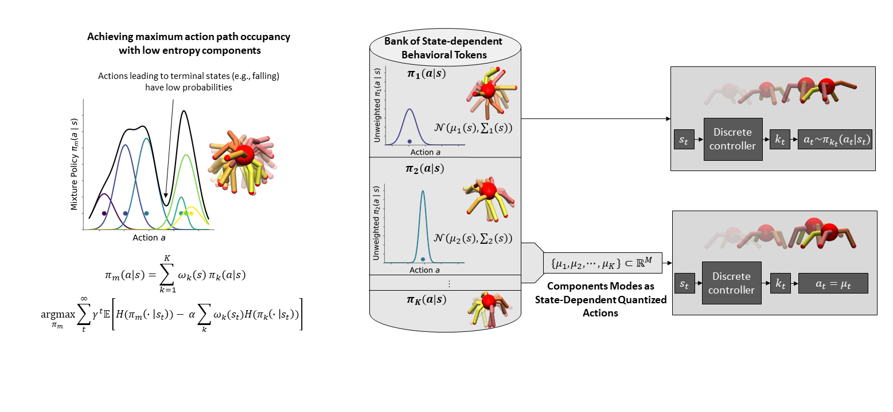
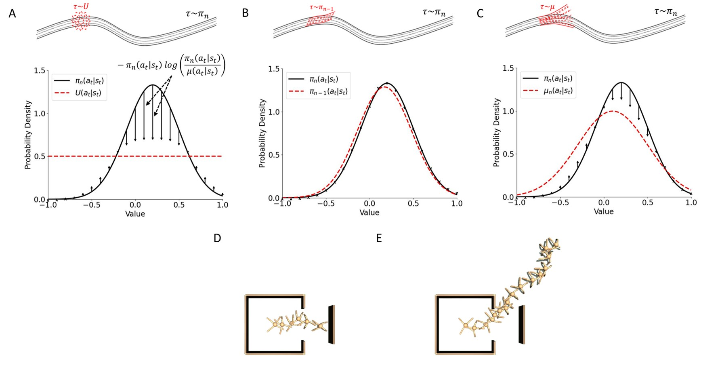
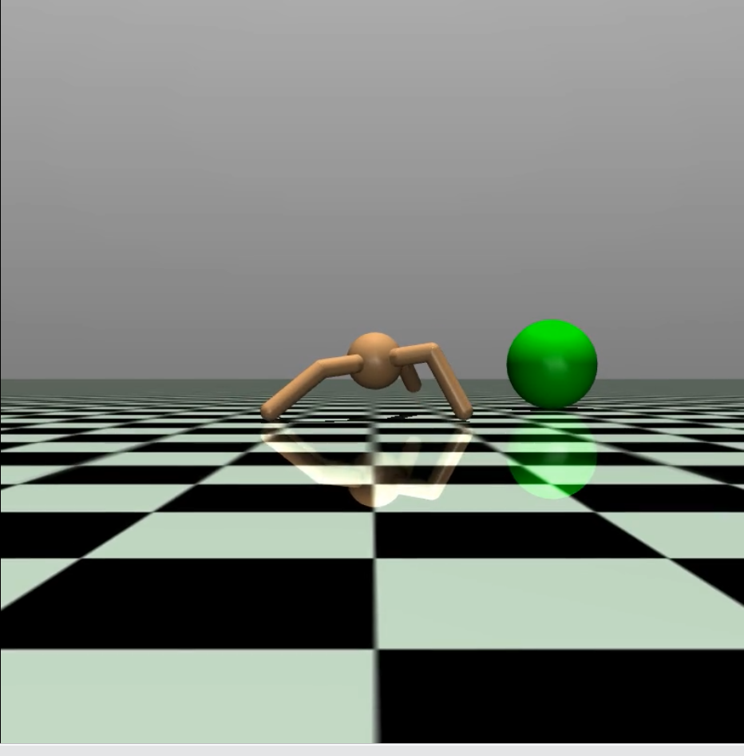

Yamen Habib
I am pursuing a PhD in Reinforcement Learning and Decision Making at the Moreno Bote Lab in Barcelona.
I'm interested in Reinforcement learning, deep learning, Optimization, and Learning theory.


